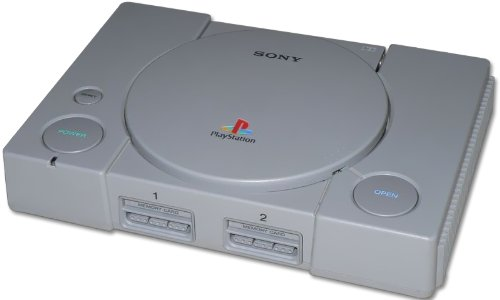
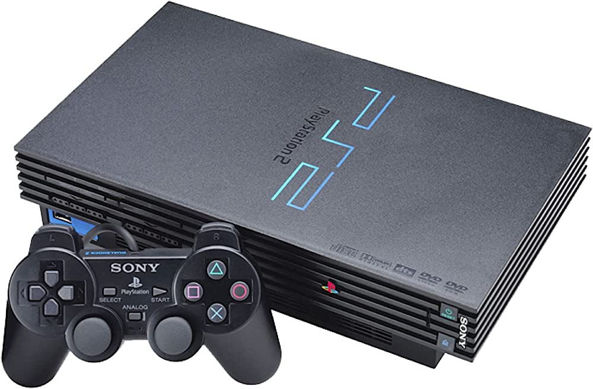
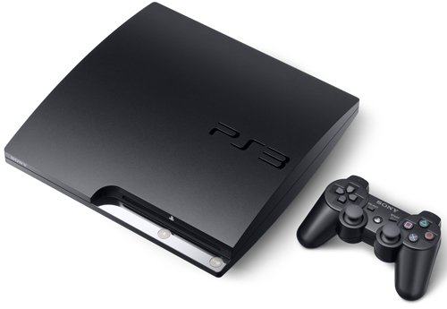
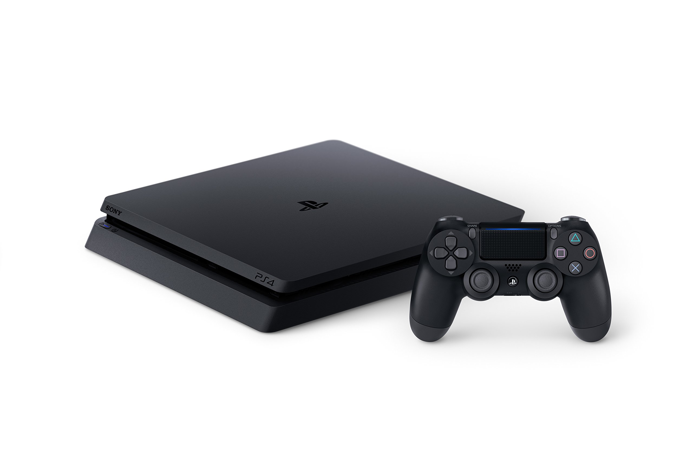
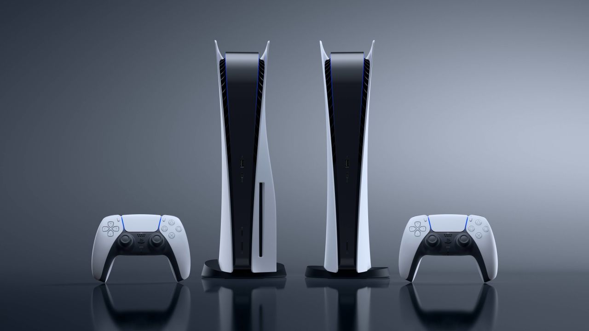

Juegos

God of War™ Ragnarök
Desde Santa Monica Studio llega la secuela del aclamado por la crítica God of War (2018). Fimbulvetr ya está en camino. Kratos y Atreus deben viajar a cada uno de los nueve reinos en búsqueda de respuestas, mientras que las fuerzas asgardianas se preparan para una batalla profetizada que terminará con el mundo.

Horizon Forbidden West™
Explora tierras distantes, enfrenta máquinas más grandes y alucinantes y encuentra nuevas e increíbles tribus al regresar al mundo postapocalíptico de futuro lejano de Horizon.

Marvel's Spider-Man: Miles Morales
En la última aventura del universo de Spider-Man de Marvel, el adolescente Miles Morales intenta ajustarse a su nuevo hogar mientras que sigue los pasos de su mentor, Peter Parker, para convertirse en el nuevo Spider-Man.
Pero cuando un feroz enfrentamiento por el poder amenaza con destruir su hogar, el aspirante a héroe entiende que un gran poder conlleva una gran responsabilidad. Para salvar a la Nueva York de Marvel, Miles debe adoptar el manto de Spider-Man y volverlo propio.

The Last of Us II
Cinco años después de su peligroso viaje a través de unos Estados Unidos pospandemia, Ellie y Joel logran establecerse en Jackson, Wyoming. Vivir entre una próspera comunidad de sobrevivientes les ha concedido paz y estabilidad, a pesar de la amenaza constante de los infectados y de otros sobrevivientes más desesperados.
Cuando un evento violento interrumpe esa paz, Ellie se embarca en un viaje incesante para obtener justicia y llegar a un cierre. A medida que caza a los responsables uno por uno, deberá enfrentarse a las devastadoras repercusiones físicas y emocionales de sus acciones.
Consolas

Playstation I
Es la primera consola de videojuegos desarrollada, comercializada y descontinuada por Sony Computer Entertainment. Fue lanzado en Japón el 3 de diciembre de 1994, en América del Norte el 9 de septiembre de 1995, en Europa el 29 de septiembre de 1995 y en Australia el 15 de noviembre de 1995. Como consola de quinta generación, PlayStation compitió principalmente con Nintendo 64 y el Sega Saturn.
Sony comenzó a desarrollar la PlayStation después de una empresa fallida con Nintendo para crear un periférico de CD-ROM para Super Nintendo Entertainment System a principios de la década de 1990.
La consola fue diseñada principalmente por Ken Kutaragi y Sony Computer Entertainment en Japón, mientras que el desarrollo adicional se subcontrató en el Reino Unido.
Se puso énfasis en los gráficos de polígonos en tercera dimensión al frente del diseño de la consola.
La producción de juegos de PlayStation fue diseñada para ser optimizada e inclusiva, atrayendo el apoyo de muchos desarrolladores externos.

Playstation II
Es la segunda videoconsola de sobremesa descontinuada producida por Sony Computer Entertainment. Fue la tercera consola de Sony en ser diseñada por Ken Kutaragi. Además de ser la sucesora de la PlayStation.
Fue lanzada por primera vez el 4 de marzo del año 2000 en Japón, y unos meses después en el resto del mundo. Es la videoconsola más vendida de la historia, con más de 155 millones de unidades vendidas.
Esta consola es también la que más títulos posee, aproximadamente 3870 títulos, seguida por su predecesora la PlayStation con unos 2500 títulos. Esta cantidad de títulos se debe a la extraordinaria acogida por parte del público en general hacia la misma, lo que incluso la consolidó como la consola con más tiempo en el mercado y a su vez la consola con más duración en el mismo, hasta que el 3 de enero del año 2013 se decide detener su fabricación tras 13 años de actividad.
A pesar del anuncio, se continuaron produciendo nuevos juegos para la consola hasta finales de 2013, estos fueron FIFA 14 y Pro Evolution Soccer 2014.

Playstation III
Es la tercera videoconsola descontinuada del modelo PlayStation de Sony Computer Entertainment.
Fue la quinta y última consola de Sony en ser diseñada por Ken Kutaragi y formó parte de las videoconsolas de séptima generación y sus competidores fueron la Xbox 360 de Microsoft y la Wii de Nintendo.
Sony confirmó, en marzo de 2017, que dejaría de fabricar la consola en Japón.
En la cual finalmente se dejó de hacer su producción el 29 de mayo de 2017, así mismo finalizando su producción únicamente en Japón en 2017, en Nueva Zelanda en el 2015, en Estados Unidos en marzo de 2016 y el resto de Norteamérica en octubre de ese año, pero la producción alrededor del mundo sigue presente, exceptuando su servicio en línea que igual está presente, a excepción de algunos servidores de ciertos títulos que ya cesaron su servicio en línea, unos ejemplos de juegos que ya han cesado servicios en la consola serían PES 2015 y más recientemente Grand Theft Auto Online.

Playstation IV
Es la cuarta videoconsola del modelo PlayStation. Es la segunda consola de Sony en ser diseñada por Mark Cerny y forma parte de las videoconsolas de octava generación.
Fue anunciada oficialmente el 20 de febrero de 2013 en el evento PlayStation Meeting 2013, aunque el diseño de la consola no fue presentado hasta el 10 de junio en el E3 2013.
Es la sucesora de la PlayStation 3, compite con Wii U de Nintendo y Xbox One de Microsoft. Su lanzamiento fue el 15 de noviembre de 2013 en Estados Unidos y Canadá, el 29 de noviembre se produjo su lanzamiento en Europa y Sudamérica, mientras que en Japón fue el 22 de febrero de 2014.
Alejándose de la compleja arquitectura utilizada en el procesador Cell de la videoconsola PlayStation 3, la PlayStation 4 cuenta con un procesador AMD de 8 núcleos bajo la arquitectura x86-64. Estas instrucciones x86-64 están diseñados para hacer más fácil el desarrollo de videojuegos en la consola de nueva generación, que atrae a un mayor número de desarrolladores.

Playstation V
Es la quinta consola de videojuegos de sobremesa desarrollada por la empresa Sony Interactive Entertainment. La PlayStation 5 junto con la Xbox Series X|S de Microsoft, lanzada el mismo mes, son parte de la novena generación de consolas de videojuegos.
Fue anunciada en el año 2019 como la sucesora de la PlayStation 4, la PS5 se lanzó el 12 de noviembre de 2020 en Australia, Japón, Nueva Zelanda, Estados Unidos, Canadá, México y Corea del Sur, y en el resto de países el 19 de noviembre de 2020.
La plataforma se lanzó en dos variantes: un modelo base con una unidad de disco óptico compatible con Ultra HD Blu-ray y una edición digital que carece de esta unidad, que sirve como modelo de menor costo para quienes prefieren comprar videojuegos mediante descarga digital.